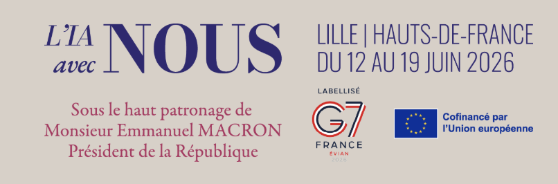

{{ p.n }}
{{ p.t }}
{{ p.d }}
{{ t.heroSub }}
“{{ t.manifesto }}”

{{ t.everyoneBody }}
{{ p.d }}

Since 2016, I’ve been a public advocate for an ethical, responsible approach to AI — rooted in the conviction that every technological advance must serve people first, and that those who build AI carry a duty of care toward society.
“Technology is never neutral. The question is not whether AI is powerful, but whether it is built — and used — for the benefit of humanity.”
I co-founded Everyone.AI in 2024 — a nonprofit anticipating the opportunities and risks of AI for children — notably through “The Future of Child Development in the AI Era” (2024) and SRL4Children, an open-source agentic framework for safe, supportive learning.
Inspired by the Hippocratic Oath, the Holberton-Turing Oath sets out the ethical commitments of those who design and deploy AI. As co-author, I helped establish early guard-rails for human-centric AI — developed and used responsibly, for the benefit of humanity.
Read the oath ↗AI augments people; it does not replace them. Every system should expand human capability and dignity.
No black boxes. Observability, traceability and explainability by design — especially for decision-critical AI.
Whoever builds it answers for what they ship. Clear governance, defined roles, alignment with the EU AI Act and GDPR.
Fight bias and make knowledge accessible to all — AI for the many, not the few.
Anticipate risk before deployment: robustness, security, drift management and guard-rails.
Direct AI toward science, education and the common interest — for the benefit of humanity.
Co-presenting “Defining & Scaling Beneficial AI for Children” with Dr. Mathilde Cerioli — introducing AïA Safety Builder, Everyone.AI’s framework for AI that supports child development (9 July 2026, Geneva).
Under the high patronage of President Emmanuel Macron, with Xavier Bertrand (Hauts-de-France). Lille · 12–19 June 2026.
Contributed to the France IA strategy (2017) and the Villani report (2018) that anchored France and Europe’s national AI strategy.
Co-initiator of AI4Humanity; reserve member of the European Commission’s High-Level Expert Group on AI.
Invited guest on AI & Ethics at the Institute for Advanced Study, Princeton.
Co-author of the Holberton-Turing Oath — an ethical oath for AI practitioners.